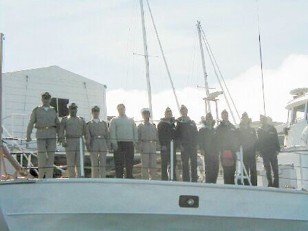
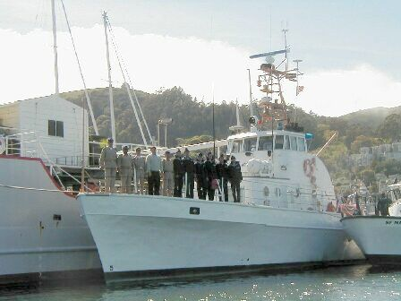

Azerbaijan Outreach
March 12, 2003
RV Transquest, Sausalito,
CA
Back to the Transquest Home Page

Azerbaijan Outreach
March 12, 2003
RV Transquest, Sausalito,
CA
Back to the Transquest Home Page

 Azerbaijan Border Guard

Click below for
Additional Photos:
The owner and crew of the Research Vessel Transquest hosted a home cooked lunch for the Azerbaijan Maritime Border Guard to provide local hospitality while the team is in San Francisco on a training mission with the U.S. Coast Guard. They are here for 4 weeks ship-board training and to officially take possession of an 82 ft U.S. Coast Guard ship which the United States is donating to the Azerbaijan government. The boat is currently the Coast Guard Cutter PT Brower but will be commissioned into the Azerbaijan Border Guard as the S-201 where she will patrol the Caspian Sea for the Federal Republic of Azerbaijan.
The crew practiced mooring to another vessel, the Transquest, and maneuvering in close quarters before coming aboard for lunch. The U.S. Coast Guard from Yerba Buena Island accompanied the Azerbaijan crew. There are two translators with the group, one of whom is a member of the crew. They were joined later by the San Francisco Police Marine unit.
Lunch conversation was animated and flowed easily. We gave the Azerbaijan crew a tour of the Transquest and explained her salvage and submersible launching capabilities. The S-201's Captain stated that vessels such as the Transquest would be well suited for underwater Archeological projects on the Caspian Sea.
Despite our language barrier (they spoke little English), the translators never tired and many questions and answers traded back and forth. They were all well mannered and good humored.
We laughed a lot!Good luck Captain & crew! Hope to see you in your country someday.
R/V Transquest
- Case Blazyk
- Victor George
- Sarah Rodger

Back
to the Transquest Home Page

Web pages & photos provided by the Transquest Web master: Sarah Rodger